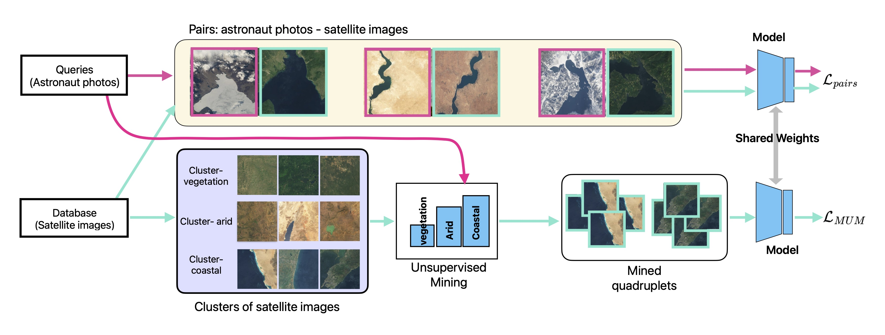

AstroLoc: Robust Space to Ground Image Localizer
TL;DR
We present AstroLoc, an accurate, robust localization model for space-based imagery of Earth. Trained jointly on astronaut photos from the International Space Station and images from Earth observing satellites, AstroLoc localizes via image retrieval over a database of satellite imagery. AstroLoc sets a new SOTA on existing space-based localization tasks like astronaut photography localization and Lost in Space orbit determination.
Check out our demo to see it in action!
Abstract
Astronauts take thousands of photos of Earth per day from the International Space Station, which, once localized on Earth's surface, are used for a multitude of tasks, ranging from climate change research to disaster management.
The localization process, which has been performed manually for decades, has recently been approached through image retrieval solutions: given an astronaut photo, find its most similar match among a large database of geo-tagged satellite images, in a task called Astronaut Photography Localization (APL).
Yet, existing APL approaches are trained only using satellite images, without taking advantage of the millions open-source astronaut photos. In this work we present the first APL pipeline capable of leveraging astronaut photos for training. We first produce full localization information for 300,000 manually weakly labeled astronaut photos through an automated pipeline, and then use these images to train a model, called AstroLoc. AstroLoc learns a robust representation of Earth's surface features through two losses: astronaut photos paired with their matching satellite counterparts in a pairwise loss, and a second loss on clusters of satellite imagery weighted by their relevance to astronaut photography via unsupervised mining.
We find that AstroLoc achieves a staggering 35% average improvement in recall@1 over previous SOTA, pushing the limits of existing datasets with a recall@100 consistently over 99%. Finally, we note that AstroLoc, without any fine-tuning, provides excellent results for related tasks like the lost-in-space satellite problem and historical space imagery localization.
Goal

GIF courtey of EarthLoc&Match.
Astronaut Photography Localization (APL) is the task of identifying the location on Earth depicted in an image taken by astronauts in space with handheld cameras. In the microgravity environment, the astronauts can orient the cameras to image any portion of the visible Earth area (20M sqkm). When using high zoom lenses, the images may contain only a few sqkm of land area, making localization akin to finding a needle in a haystack.Training Pipeline
AstroLoc is the first APL model to be trained on astronaut photos themselves. After converting 300k weakly labeled astronaut photos into a fully labeled training set, we pair astronaut photos with corresponding satellite images and train using a contrastive loss. At the same time, we jointly train on batches of clustered satellite images (following the method in EarthLoc), to ensure our model has a complete view of Earth's landforms. Results
AstroLoc excels in various space-to-ground localization tasks. While trained for astronaut photography localization, AstroLoc can also be used to identify satellite location/orbit from imagery (the "Lost in Space" problem), and localize historical space shuttle photography, which was originally taken on film and digitized and doesn't come tied to trajectory data. Examples from each domain, which contain notable visual differences (domain gaps), are below.